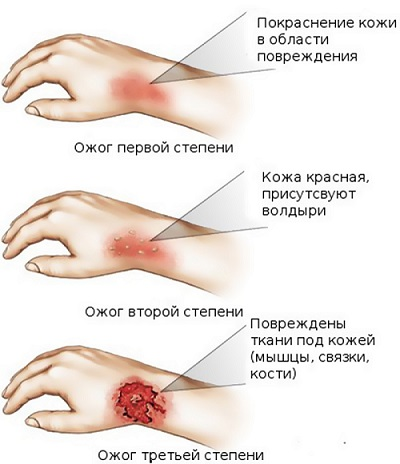
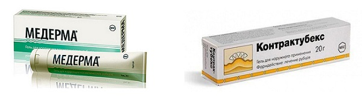

Нам в офис часто поступают звонки от обезумевших родителей, чей ребенок только что обжегся. Мы настоятельно рекомендуем родителям прочитать этот раздел ПРЕЖДЕ, ЧЕМ ожог произойдет, и обратить особое внимание на идеи по профилактике. Большинство ожогов вызывается горячей водой и напитками. Другие причины — огонь, горячие духовки и печи, масло, щипцы для завивки, фены, отопительные приборы, паровые испарители и утюги. Тяжесть ожога и способы лечения определяются его размерами и глубиной поражения: бывают ожоги первой, второй и третьей степени.
Ожоги первой степени. Обожжен только верхний слой кожи. Кожа красная, припухшая и болезненная — без образования каких-либо пузырей. Ожоги первой степени можно лечить дома, если они не захватывают большие участки кожи рук, ног, лица или паховой области.
Ожоги второй степени. Они поражают и внешний, и внутренний слои кожи. Ожог намного более болезнен ный, кожа ярко-красная, образуются пузыри. Домашнее лечение возможно, если ожог небольшой (меньше 2 дюймов (около 5 см) в диаметре). При больших ожогах второй степени, а также ожогах любого размера на руках, ногах, лице, в паховой области, на ягодицах или крупных суставах требуется медицинская помощь.
Ожоги третьей степени. Эти ожоги обычно БЕЗБОЛЕЗНЕННЫ (потому что болевые рецепторы разрушены), но самые серьезные. Ожоги третьей степени вовлекают все слои кожи и могут повреждать даже жировую клетчатку, мышцы и кость. Обожженный участок может выглядеть обугленным или казаться сухим и белым. Вызовите своего врача при маленьком (размером с четвертак — около 27,5 мм) ожоге третьей степени. Отправляйтесь прямо в отделение неотложной помощи при больших ожогах третьей степени.

ЧТО ДЕЛАТЬ
Охладите ожог как можно скорее. Немедленно поместите обожженную область под струю холодной воды.
Достаточно несколько минут подержать ожог под холодной водой из крана. Если получится, положите несколько кубиков льда в емкость с водой и опустите туда обожженный участок. Охлаждайте ожог около 15 минут. Не погружайте в холодную воду тяжелые обширные ожоги — это может вызвать шок.
Не наносите на ожоги масло или мази.
Закройте обширный ожог, не прижимая, чистой влажной тканью или пластиковым пакетом. Это уменьшит боль и защитит ожог от загрязнения, пока вы доберетесь до отделения неотложной помощи.
ВЫЗЫВАЙТЕ «СКОРУЮ ПОМОЩЬ», если есть затруднение дыхания или при тяжелых поражениях.
Уход на дому. После оказания первой помощи, описанной выше, небольшие ожоги можно лечить дома.
Сообщите своему врачу о:
|
КОГДА ОБРАЩАТЬСЯ К ВРАЧУ
Обратитесь к врачу, если:
ДАЛЬНЕЙШИЙ УХОД
Защита от солнца. Это одна из самых важных мер профилактики развития рубца. В течение года после ожога кожа в этом месте будет выглядеть более розовой, чем окружающая. Эта новая кожа более восприимчива к солнечным лучам, и солнечный ожог может привести к образованию рубца. Всегда используйте крем от загара с максимальной степенью защиты, носите панаму или солнцезащитную одежду.
Противорубцовые кремы. В продаже доступны несколько видов кремов, предназначенных для длительного использования после ожогов или порезов. Их надо наносить каждый день.
Пластические хирурги часто рекомендуют их для уменьшения образования послеоперационных рубцов. Сейчас наиболее популярен крем «Медерма» (аналог «Контрактубекса»). Он отпускается без рецепта.

СОВЕТ ДОКТОРОВ СИРС: ДЕРЖИТЕ ДОМА РАСТЕНИЕ АЛОЭ Одно из лучших средств для лечения ожогов первой степени (например, солнечных) — сок листьев алоэ. Сорвите лист, выжмите немного сока на ладонь и нежно нанесите на обожженную поверхность. |
ПРОФИЛАКТИКА ОЖОГОВ
Все родители начинают думать об этих вещах ПОСЛЕ того, как ожог произошел. Наша цель — чтобы вы подумали о них ПРЕЖДЕ, чем случится несчастье.
Здоровье ребенка от докторов Сирс / Сирс У. и др.